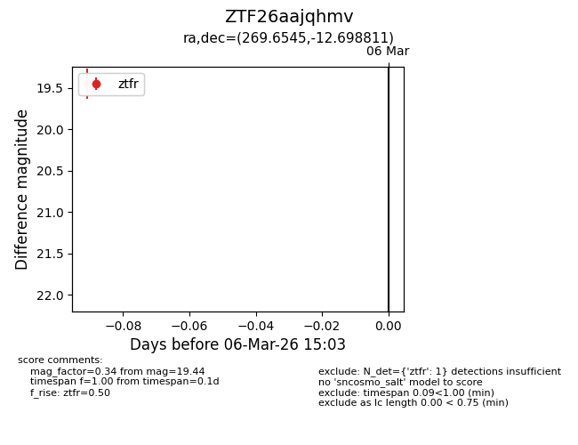
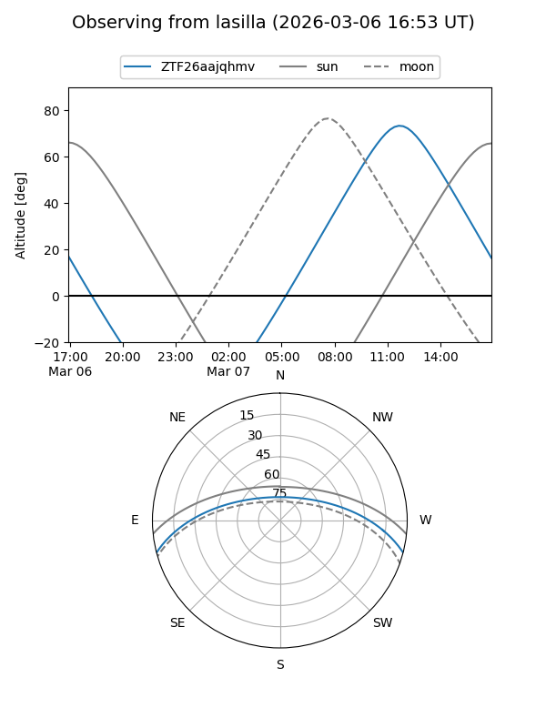
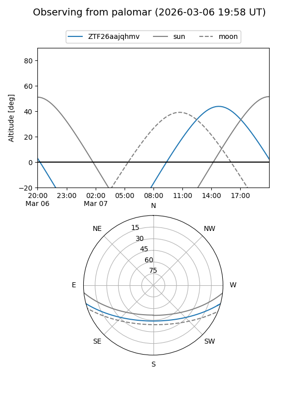

ZTF26aajqhmv
Target ZTF26aajqhmv at 2026-03-06 15:04
Aliases and brokers:
FINK: link
Lasair: link
ALeRCE: link
alt names
ZTF26aajqhmv (ztf,fink_ztf)
Coordinates:
equatorial (ra, dec) = 269.6545,-12.69881
equatorial (HMS+DMS) = 17:58:37.07,-12:41:55.72
galactic (l, b) = (15.5525,+5.62949)
Flags:
Photometry:
last ztfr=19.44
1 ztfr detections
Lightcurve

Visibility


Additional plots